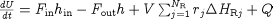

The previous section described how models can be made more robust during initialisation. The approach was to use a gPROMS Initialisation Procedure to specify a set of Parameter values that guarantees initialisation and how these can be replaced by the desired values in a way that ensures successful initialisation. A similar situation arises with the specification of degrees of freedom: that is, any degrees of freedom need to be taken up by specifying the values of some Variables in the ASSIGN section.
Consider, once again, the energy balance equation for a lumped CSTR model:

Here for example, the rate of heat input to the system, Q, may depend on a Variable representing the steam flowrate,
Fsteam, through the vessel jacket or a coil. For an open-loop simulation, this variable would be specified in the ASSIGN section
of the gPROMS Process.
One possible initialisation procedure would then be to start the initialisation with Fsteam set to zero (which would
guarantee initialisation) and then move the value of Fsteam to the desired value.
This would be defined in gPROMS using the following code.
# end of EQUATION section
INITIALISATION_PROCEDURE IP_NoSteamFlow
START
F_steam := 0 ;
END
NEXT
MOVE_TO
REVERT F_steam ;
END
END
END
Note that REASSIGN or RESET tasks cannot be used to redefine the value of any ASSIGNed variables in the context of an Initialisation Procedure.